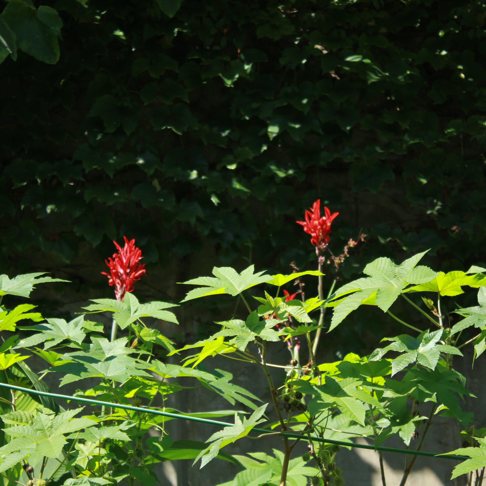

위대한 갯츠비
F.스콧 피츠제럴드

이 이야기는 닉 캐러웨이(Nick Carraway)의 관점에서 1922년 초여름 뉴욕 롱아일랜드의 웨스트에그(West Egg)를 배경으로 한다.
그는 중서부(현대 미국의 인디애나 주, 일리노이 주 등을 포괄하는 지역, 원작에서는 단순히 서부로 지칭.)에서 살아왔으며,
예일 대학교를 졸업했고 세계 1차 대전에 참가한 인물이다. 그는 주식 채권기술을 배우기 위해 고향을 떠나 뉴욕에서 살기로 결심한다.
그가 뉴욕 롱아일랜드에 집을 구한 뒤, 닉은 그의 이웃 제이 개츠비(Jay Gatsby)와 친구가 된다. 제이 개츠비는 그의 롱 아일랜드 대저택에서 매일 밤 호화 파티를 벌이는 엄청난 부자이다. 개츠비의 막대한 재산은 많은 소문의 주제이다. 닉이 그의 파티에서 만나는 손님 중에 그의 과거를 정확히 알고 있는 사람은 없었다. 그는 또한 웨스트에그보다 더 좋은 지역인 이스트에그(East Egg)에 살고 예일에 같이 다닌 톰 뷰캐넌(Tom Buchanan)과 톰의 아내이자 닉의 칠촌뻘인 데이지(Daisy Buchanan), 재산이 많은 전 여자 골프선수인 조던 베이커(Jordan Baker)를 만난다.
출처: 나무위키
그가 뉴욕 롱아일랜드에 집을 구한 뒤, 닉은 그의 이웃 제이 개츠비(Jay Gatsby)와 친구가 된다. 제이 개츠비는 그의 롱 아일랜드 대저택에서 매일 밤 호화 파티를 벌이는 엄청난 부자이다. 개츠비의 막대한 재산은 많은 소문의 주제이다. 닉이 그의 파티에서 만나는 손님 중에 그의 과거를 정확히 알고 있는 사람은 없었다. 그는 또한 웨스트에그보다 더 좋은 지역인 이스트에그(East Egg)에 살고 예일에 같이 다닌 톰 뷰캐넌(Tom Buchanan)과 톰의 아내이자 닉의 칠촌뻘인 데이지(Daisy Buchanan), 재산이 많은 전 여자 골프선수인 조던 베이커(Jordan Baker)를 만난다.
출처: 나무위키